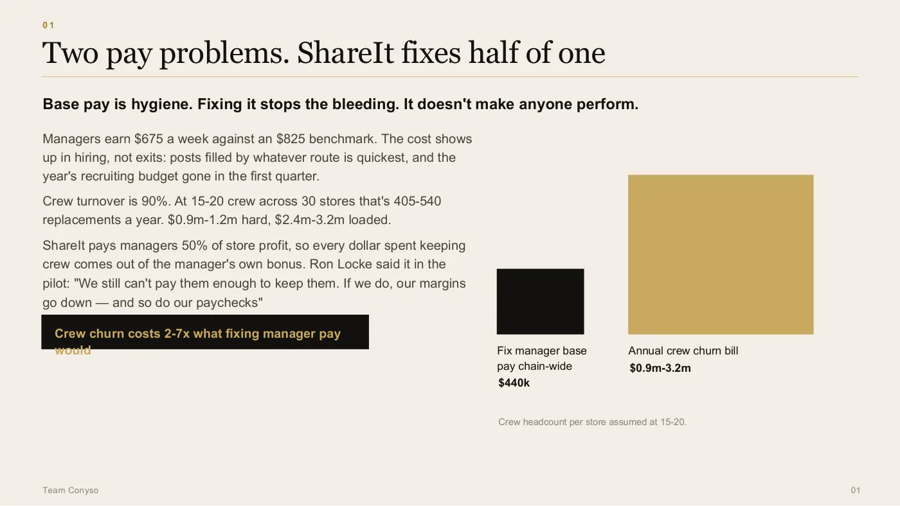
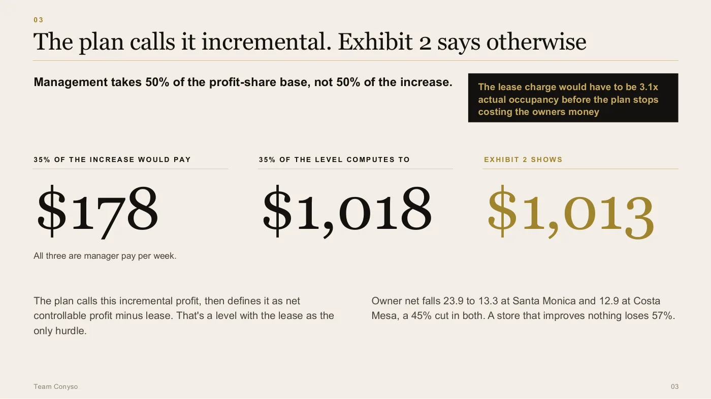
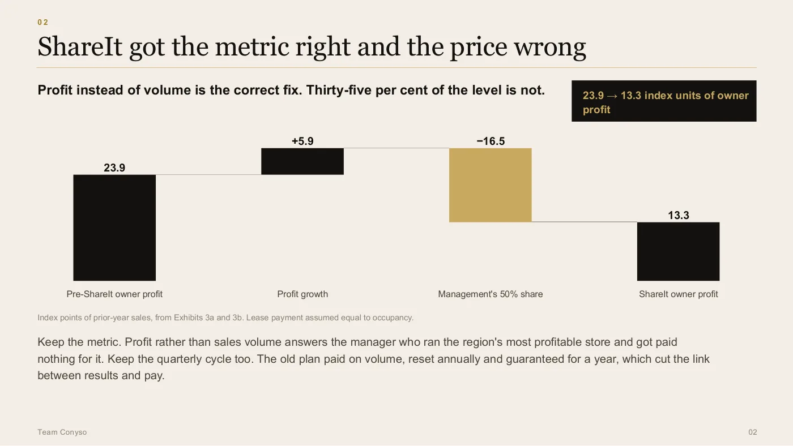
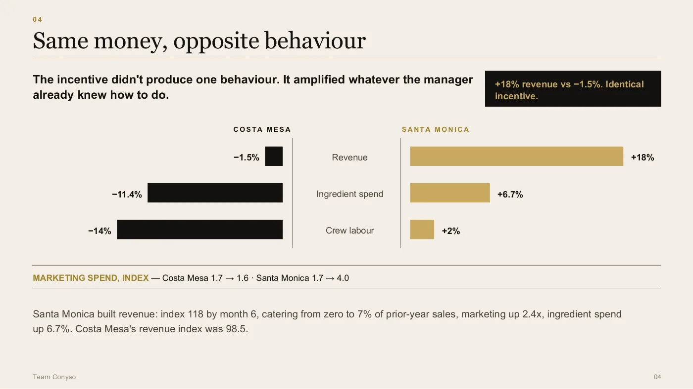
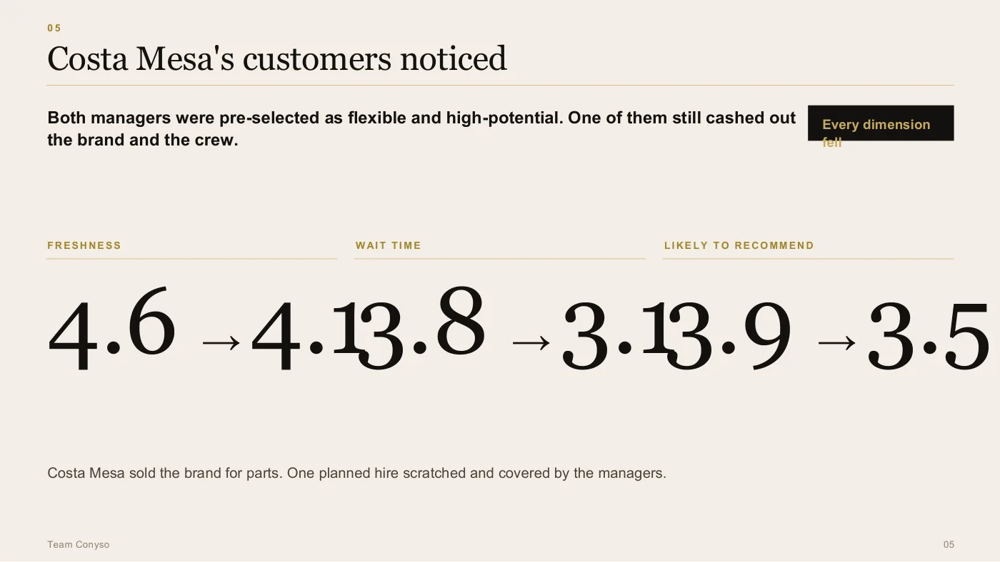
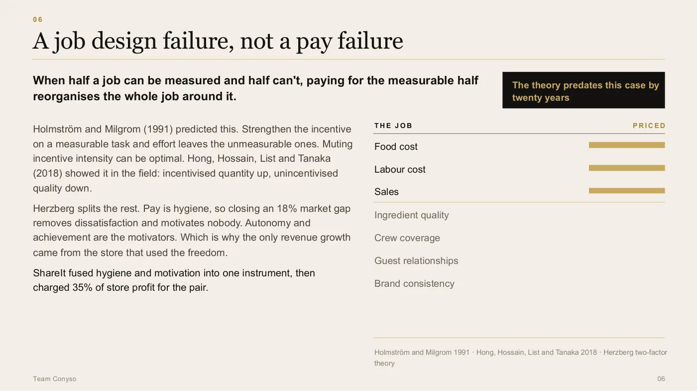
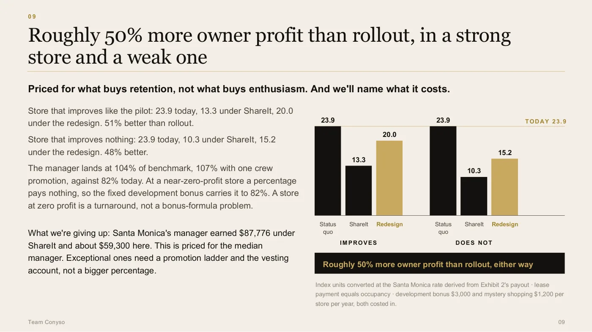
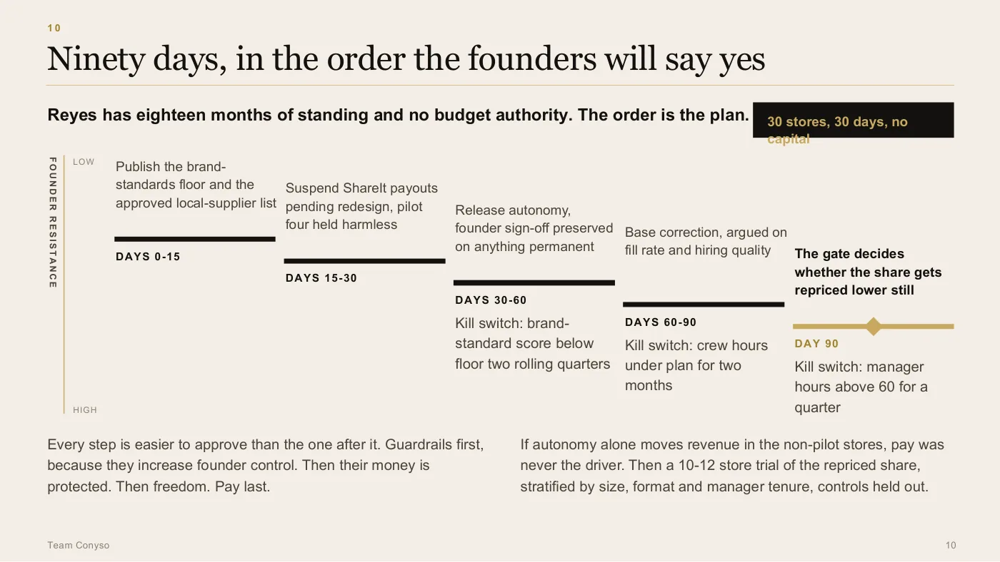

Certamus · Case competition
People Matrix
CHRIST (Deemed to be University), Delhi NCR · September 2026 · Finalist, did not contest it
The brief below is restated in our own words. The original belongs to the organiser.
The recommendation nobody had priced
The brief put us in the chair of an HR head at a thirty-store restaurant group, three days from telling two founders whether to roll a manager incentive plan out across the chain. The plan had run as a pilot in two stores. Both had been picked as high-potential. Both had done well on the headline number.
So the expected answer was yes, with conditions.
We read the exhibits before we read the plan, and the exhibits said the recommendation on the table handed roughly half the founders' own store profit away, permanently, on evidence from two hand-picked outlets with nothing to compare them against.
The brief belongs to the organiser, so it is restated here in our own words rather than reproduced.

There were two pay problems, and the plan addressed half of one. Managers were about 18% under benchmark, but the expensive number was crew turnover at 90%, which costs somewhere between two and seven times what fixing manager pay would.
The word that was doing the hiding
The plan called what it paid out incremental profit. Then, further down, it defined that as net controllable profit minus lease.
Those are not the same thing. The second one is not an increase at all. It is the whole level, with the lease as the only hurdle it has to clear first.
The difference is not academic and it is not small. Thirty-five per cent of the actual increase would have paid a manager about 178 dollars a week. Thirty-five per cent of the level computes to 1,018. The plan's own exhibit shows 1,013 actually paid.
That third number is the one that settles it. We were not arguing about interpretation against the plan's authors. We were pointing at their own payout table and showing that it matched the reading they said was not the reading.
We also worked out what it would take for the plan to stop costing the owners money, which is the sort of thing a panel asks when a finding is this blunt. The lease charge would have to be about 3.1 times actual occupancy. That went on the slide before anyone could ask for it.

The finding the whole recommendation turned on, and the reason we put it on a slide of its own. Two of these numbers are what the plan says it does. The third is what its own exhibit shows it did.
The metric was right. The price was wrong.
The easy version of this answer is to kill the plan, and we did not give it.
Paying on profit instead of sales volume is the correct fix, and it answers a real grievance: under the old scheme a manager who ran the most profitable store in the region got nothing for it, because the old plan paid on volume, reset every year and was guaranteed for a year anyway. Keeping the quarterly cycle was right too.
What was wrong was the level. Not the idea.

Owner profit falling from 23.9 index units to 13.3, built from the plan's own exhibits. A store that improves nothing loses 57%.
One incentive, two managers, opposite behaviour
The two pilot stores were given an identical instrument and did nearly opposite things with it.
One built revenue: up 18%, catering from nothing to 7% of prior-year sales, marketing spend up about 2.4 times, and ingredient spend up with it. The other went down 1.5% on revenue and got there by cutting: ingredients down 11.4%, crew labour down 14%, one planned hire quietly not made and covered by the managers themselves.
This is the part that makes the pilot uninterpretable rather than encouraging. Pay and autonomy were granted together, so nothing in the result can be attributed to either one. And the founders' own doubt, that these two stores might have improved anyway, makes the owners' loss bigger rather than smaller: if they would have grown regardless, the plan is paying half the profit for growth it did not cause.

Same money, opposite behaviour. The incentive did not produce one response. It amplified whatever each manager already knew how to do. 
And the customers noticed. Freshness, wait time and likelihood to recommend all fell at the store that cut. Both of these managers had been pre-selected as flexible and high-potential.
2 slides
A job design failure wearing a pay problem's clothes
When half a job can be measured and half cannot, paying hard for the measurable half reorganises the whole job around it.
That is not our observation. Holmström and Milgrom set it out in 1991, and the useful part of their result is the counterintuitive one: muting the intensity of an incentive can be the optimal move, not a soft one. Hong, Hossain, List and Tanaka showed the same thing in the field in 2018, where incentivised quantity went up and unincentivised quality went down.
Herzberg splits the rest of it. Pay is hygiene, so closing an 18% market gap removes a reason to leave and motivates nobody. Autonomy and achievement are the motivators, which is exactly why the only real revenue growth came from the store that used the freedom rather than the money.
The plan fused a pay rise, a metric change and an autonomy grant into one instrument, and then charged 35% of store profit for the bundle.

The two columns that carry the argument: what the job is, and which parts of it the plan put a price on. Everything in the right-hand column is unpriced, and the priced column is where both managers went.
Unbundle it, then sequence it
Our recommendation was a hiatus, because it is the only one of the four options on the table that separates the two variables and stops the transfer while it does so. Rolling out keeps the confound. A larger trial keeps the same confound at greater cost and keeps paying out for another six months. Abandoning throws away a metric that was right and puts managers back on the below-market guarantee that produced 41% salaried turnover in the first place.
Then three separate answers to the three things the plan had fused: pay the market base and argue it on hiring rather than retention, reprice the share from 35% to 12% with the bonus gated on crew and standards and part of it banked into a vesting account, and release the autonomy under a single rule. Additions permitted, substitutions prohibited. That one line licenses everything the growing store did and forbids everything the cutting store did.
The sequencing mattered more than usual here because the person giving the advice had eighteen months of standing and no budget authority. An answer they cannot get approved is not an answer. So every step is easier to say yes to than the one after it, and each phase carries a kill switch that is defined before it starts rather than argued about afterwards.
We also named what the redesign costs rather than leaving it for the panel to find. The strong store's manager earned about 87,800 dollars under the original plan and lands near 59,300 under ours. This is priced for the median manager, and exceptional ones need a promotion ladder instead of a bigger percentage. We would rather say that on the slide than be shown it.

Run against a store that improves like the pilot and a store that improves nothing, the redesign returns roughly 50% more owner profit than the rollout in both cases. 
Ninety days, ordered by what the founders will agree to rather than by what matters most. Guardrails first because they increase founder control, then their money, then freedom, and pay last.
2 slides
The final we did not turn up to
We reached the final and did not contest it. Mid-semester exams were running and travelling to the campus was not something we could make work, so the deck above is where this one stops.
Worth recording anyway, because the finding in it is the cleanest we have produced: not a judgement call about strategy but a definitional gap between what a plan said it paid and what its own exhibit showed it paying. Those are rare, and they are the only kind of argument that does not depend on the panel sharing your priors.